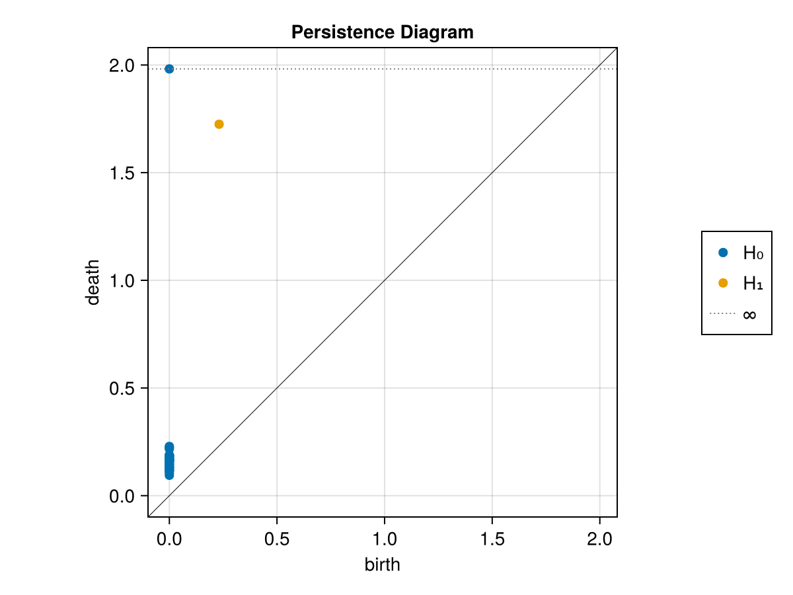
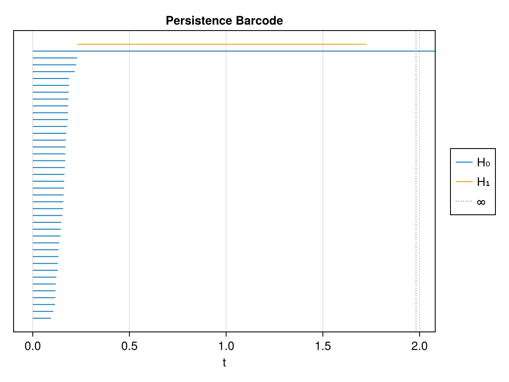

Persistent homology for ML
This example takes several point clouds, computes their persistence diagrams with ripserer, visualises one, and then turns the diagrams into fixed-length feature vectors with Landscape and PersistenceImage. The result is a plain numeric matrix — exactly what a classifier (from MLJ, ScikitLearn, Flux, …) expects — without pulling in any heavy ML dependency here.
using JuliaTDA
using CairoMakie
using Random
CairoMakie.activate!(type = "png")
Random.seed!(7)Some point clouds
We make three noisy clouds. Two have a single loop (one large, one small), and one has two loops — so their first-homology (H₁) signatures differ, which is precisely what we want a classifier to pick up.
circle(n; r = 1.0, c = (0.0, 0.0)) =
[Float64[c[1] + r*cos(t), c[2] + r*sin(t)] for t in range(0, 2π, length = n+1)[1:n]]
noisy(cloud; s = 0.02) = [p .+ s .* randn(2) for p in cloud]
clouds = [
noisy(circle(40; r = 1.0)), # one loop
noisy(vcat(circle(30; c = (-2.0, 0.0)), circle(30; c = (2.0, 0.0)))), # two loops
noisy(circle(40; r = 0.5)), # one small loop
]
length.(clouds)3-element Vector{Int64}:
40
60
40Computing persistence diagrams
ripserer returns one diagram per homology dimension: dgm[1] is H₀ (connected components) and dgm[2] is H₁ (loops).
dgms = [ripserer(cloud) for cloud in clouds]
dgms[1] # H0 and H1 of the first cloud2-element Vector{PersistenceDiagram}:
40-element 0-dimensional PersistenceDiagram
1-element 1-dimensional PersistenceDiagramThe number of high-persistence points in H₁ counts the loops:
[length(d[2]) for d in dgms] # H1 feature counts: 1, 2, 13-element Vector{Int64}:
1
2
1Visualising a diagram
persistence_plot(dgms[1])
The same information as a barcode:
barcode_plot(dgms[1])
Vectorizing for machine learning
A persistence diagram is a variable-size set of points, so we map each one to a fixed-length vector. Two standard choices:
Landscape— persistence landscapes (Bubenik).Landscape(k, diagrams; length = L)builds thek-th landscape sampled atLpoints, with the time range inferred fromdiagrams.PersistenceImage— a smoothed, rasterised image of the diagram.PersistenceImage(diagrams; size = s)produces ans × simage.
We fit both on the H₁ parts of all diagrams, then concatenate their outputs into one feature row per sample.
h1s = [d[2] for d in dgms]
land = Landscape(1, h1s; length = 20) # range inferred from the diagrams
img = PersistenceImage(h1s; size = 5) # 5 x 5 image
feats = map(h1s) do h1
vcat(land(h1), vec(img(h1))) # 20 landscape + 25 image = 45 features
end
feature_matrix = permutedims(reduce(hcat, feats)) # rows = samples, cols = features
size(feature_matrix)(3, 45)feature_matrix is a dense 3 × 45 Matrix{Float64}: three samples, 45 topological features each. Hand it directly to your favourite classifier:
feature_matrix[:, 1:6] # a peek at the first few feature columns3×6 Matrix{Float64}:
0.0 0.0444939 0.12317 0.201846 0.280522 0.359198
0.0 0.00848853 0.0871646 0.165841 0.244517 0.323193
0.039338 0.118014 0.19669 0.275366 0.318117 0.239441Other vectorizations exported by JuliaTDA include BettiCurve, Silhuette, Life/Midlife, and the entropy curves LifeEntropy / MidlifeEntropy; diagram-to-diagram distances Bottleneck and Wasserstein are available too.